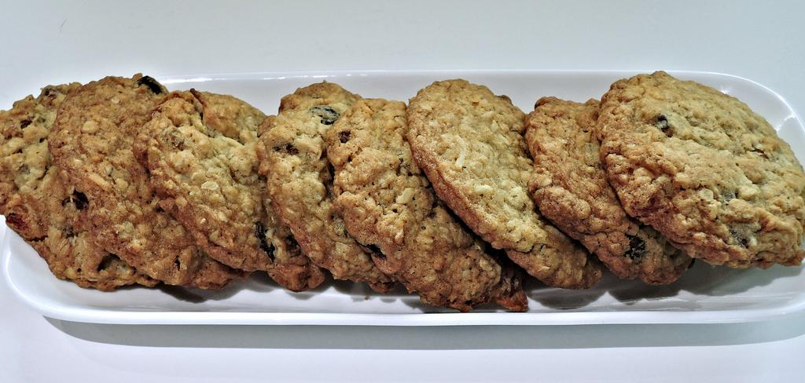

Oatmeal Cookies

Cookies worth Eating
Cookies are my favorite treat. So easy to grab and go! Oatmeal cookies at least make you feel slightly less bad about eating a bunch of them in one go.
Not that I would ever do such a thing...
Ingredients
- Flour
- Old Fashioned Oats
- Baking Soda
- Brown Sugar
- Salt
- Room Temp Unsalted Butter
- Egg
- Vanilla
- Raisins
Steps
- Preheat oven to 350F
- Line Baking Sheet with parchment paper
- Cream the Butter and Sugar together. Then Add the Egg and Vanilla
- In seperate bowl, mix the oats, flour, baking soda, and salt
- In the bowl with the sugar mix, add in the flour mix until it is just mixed.
- Then mix in the raisins just until they are incorporated.
- Scoop the mixture onto the sheets
- Bake for 15mins, rotating sheets halfway through
- Set Cookies on cooling rack to cool
Home Page